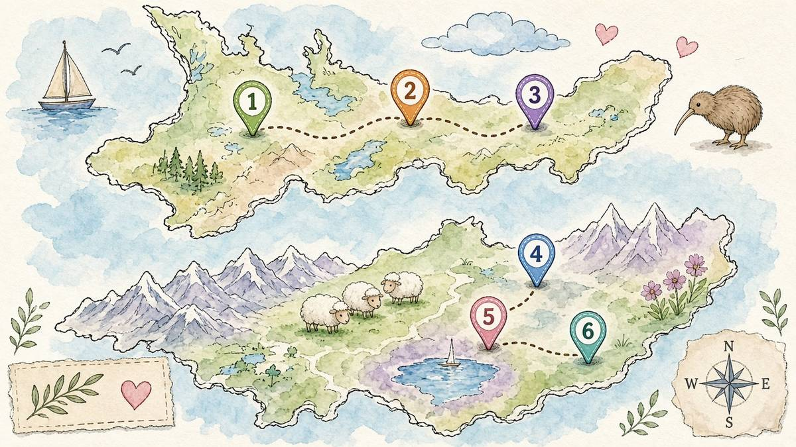
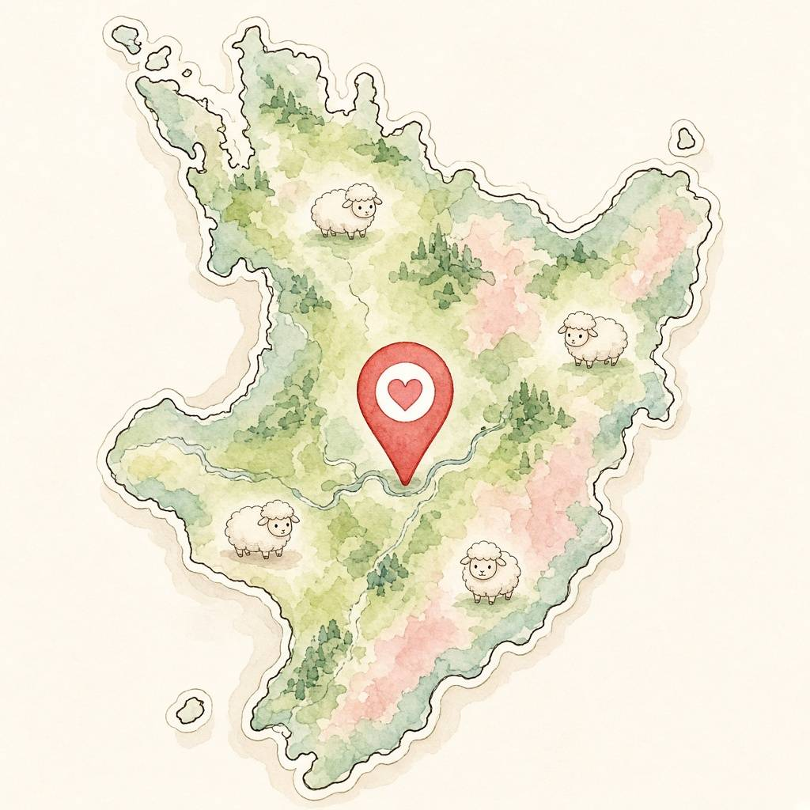
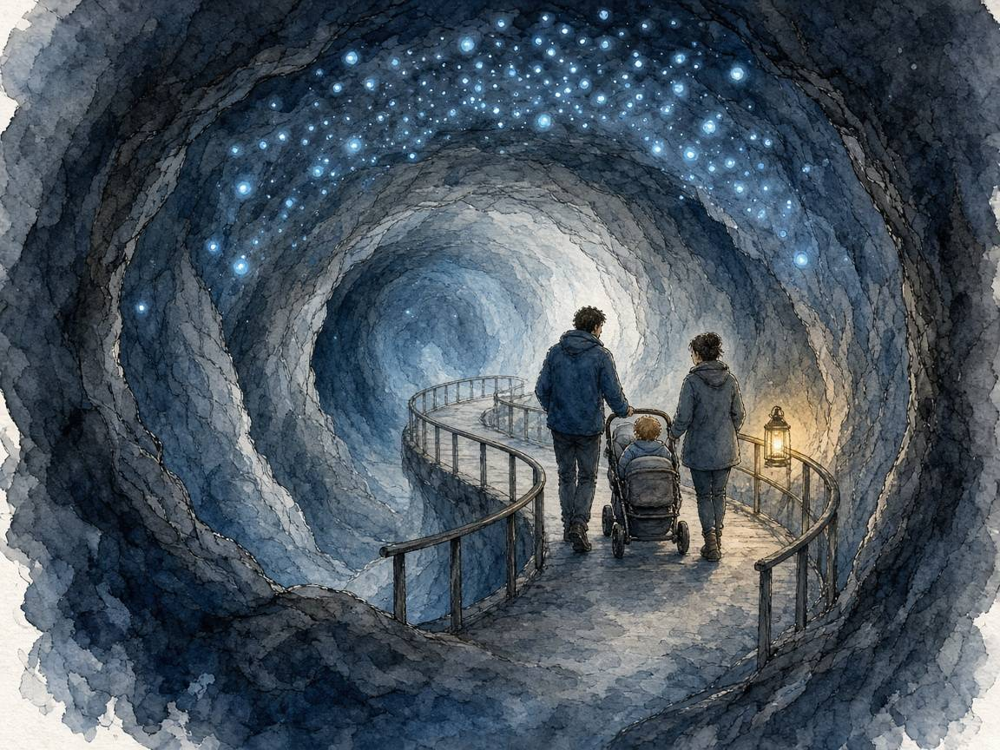
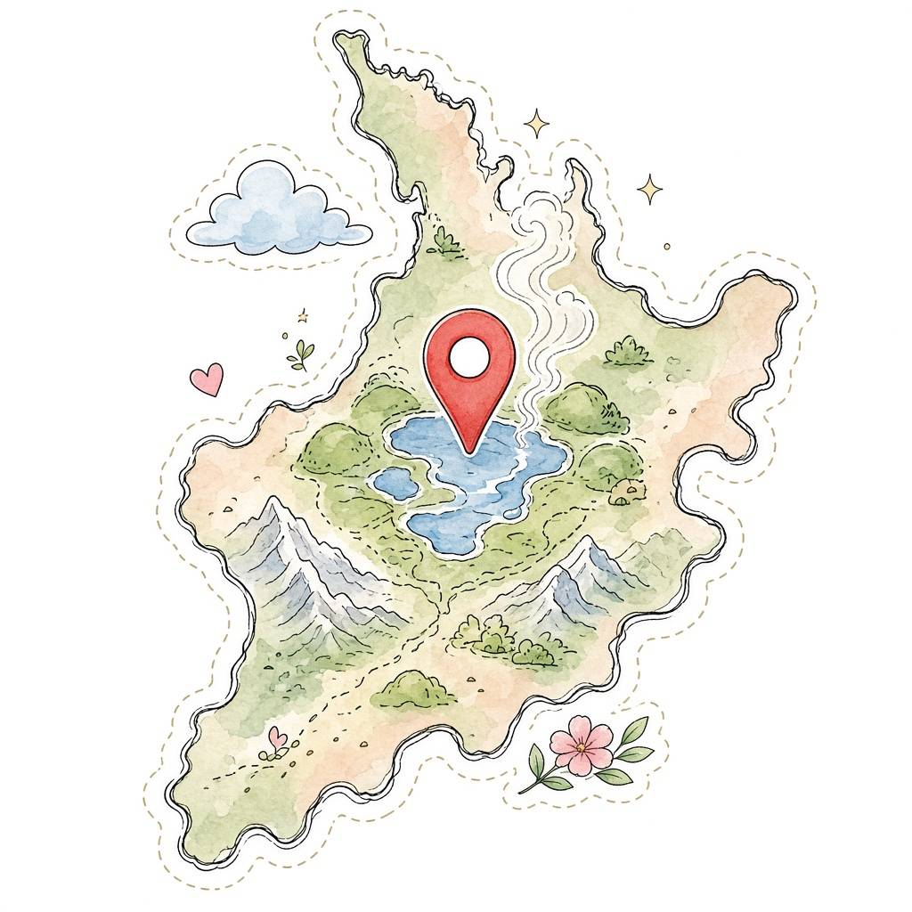
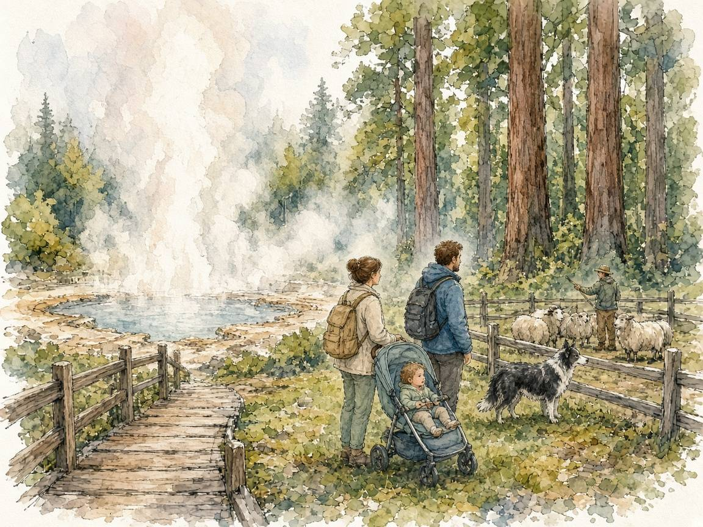
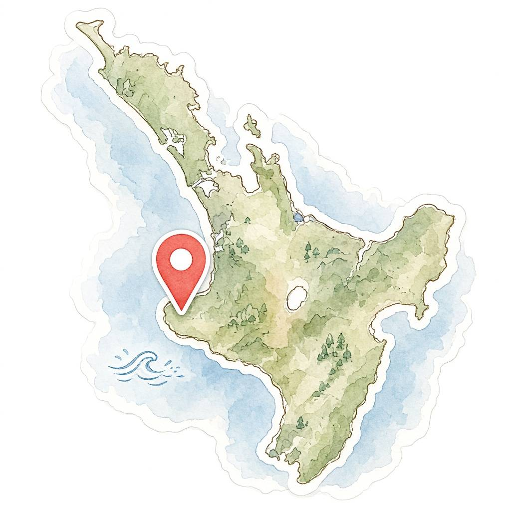
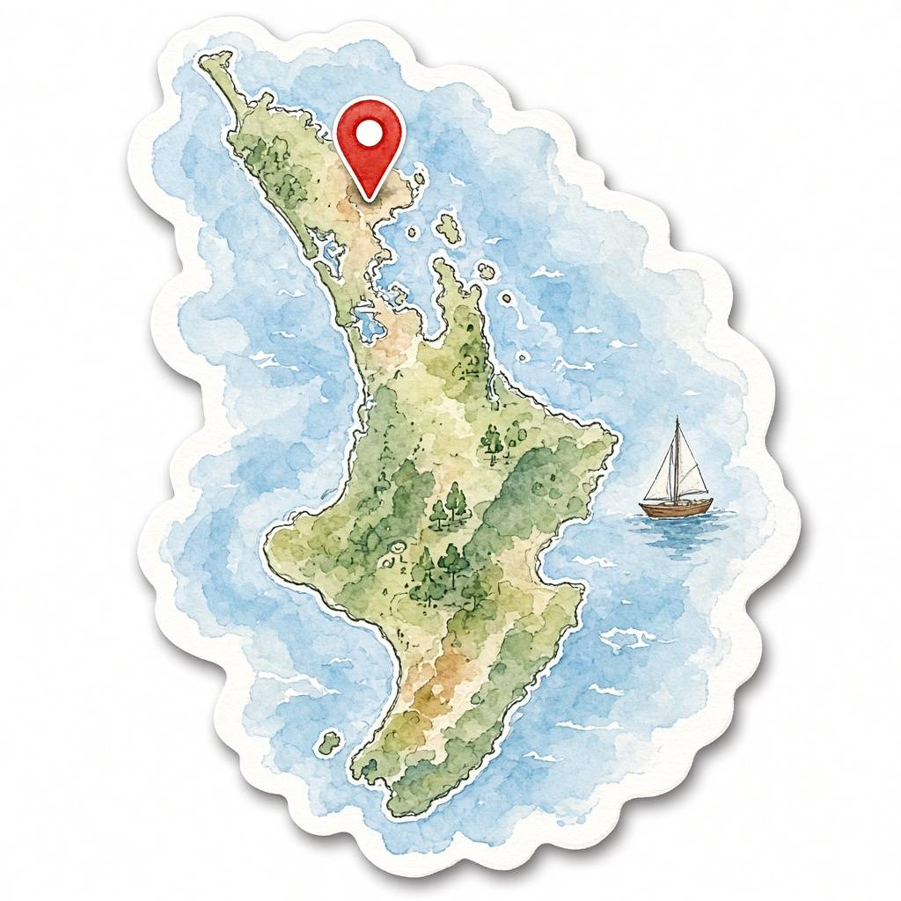

North Island
北島路線
Hamilton（2N）→ Rotorua（4N，含 Taupo 日遊）→ Auckland。12/29 經 Karioitahi Beach 入城。哈比村已取消（無票）。

Hamilton
已訂 · 2 晚23/12–25/12 · 落機休息 + Waitomo 船洞螢火蟲

You are here · Hamilton
北島 Waikato · 機場南下約 1.5 小時
住宿 Dove's Rest — Brand New 4 Bedrooms Getaway to Eden
- Waitomo Glowworm Caves 船洞（傳統小船睇螢火蟲）
- Hamilton Gardens（平路推車）
- Otorohanga Kiwi House（可選）
- 25/12 聖誕彌撒後轉往 Rotorua

Rotorua
已訂 · 4 晚25/12–29/12 · 北島親子大本營；28/12 Taupo 日遊

You are here · Rotorua
地熱湖區 · Deb 家庭 29/12 清晨先出發
住宿 Rotorua（已訂）
- Te Puia／毛利地熱文化
- Agrodome 農場騷（餵羊駝）
- Redwoods + Skyline 纜車（唔玩 Luge）
- Polynesian Spa Family Pool
- 28/12 Taupo 日遊（唔過夜）：Huka Falls／Prawn Park／Aratiatia
- 唔去 Hobbiton（29/12 無票，已刪）

12/29 轉場日
Rotorua → Auckland
途經 · Karioitahi Beach
奧克蘭西南岸沙灘 · 入城前進食／放電
- Deb 家庭：清晨離開 Rotorua，較早入 Auckland
- KK 家庭：可經 Karioitahi Beach 再入城
- 當日目標：到 Nesuto 辦理入住（15:00）
Auckland
已訂公寓Nesuto St Martins · Deb 住到 1/1；KK 住到 2/1

You are here · Auckland
CBD 附近服務式公寓 · 泳池／廚房／泊車
住宿 Nesuto St Martins Apartment Hotel（標準 2 房公寓）
- SEA LIFE Kelly Tarlton’s
- Devonport 渡輪 + 碼頭遊樂場
- Sky Tower／海港散步
- Hobbiton 已刪（無票）
- 2/1 KK：NZ0547 AKL→CHC 14:10（5 成人 + 1 小童）
KK 2/1 退房 10:00；請午前收好行李、盡早前往機場。航班 14:10，預留入閘同托運時間。
North calendar
北島日曆
| 日子 | 住宿 | 行程 | 備註 |
|---|---|---|---|
| 23/12 | Hamilton Dove's Rest |
落機 → 取車 → 15:00 後入住 | 早瞓緩衝時差 |
| 24/12 | Hamilton | Waitomo 船洞 + Gardens | 洞內著外套 |
| 25/12 | Rotorua（已訂） | 聖誕彌撒／上午活動 → 轉 Rotorua | 10:00 前退房 Hamilton |
| 26–27/12 | Rotorua | Te Puia／Agrodome／Redwoods／Spa | 每日 ≤2 重點 |
| 28/12 | Rotorua | Taupo 日遊（唔過夜） | 當晚返 Rotorua |
| 29/12 | Auckland Nesuto |
Deb 清晨出發；KK 可經 Karioitahi Beach → 15:00 入住 | 無 Hobbiton |
| 30–31/12 | Auckland | Kelly Tarlton's／Devonport／Sky Tower | 室內夾雨 |
| 1/1 | Auckland （Deb 退房） |
Deb 退房離境／KK 輕鬆半日 | KK 續住 |
| 2/1 | 飛南島 | KK 10:00 退房 → NZ0547 14:10 AKL→CHC | 午前完成 |